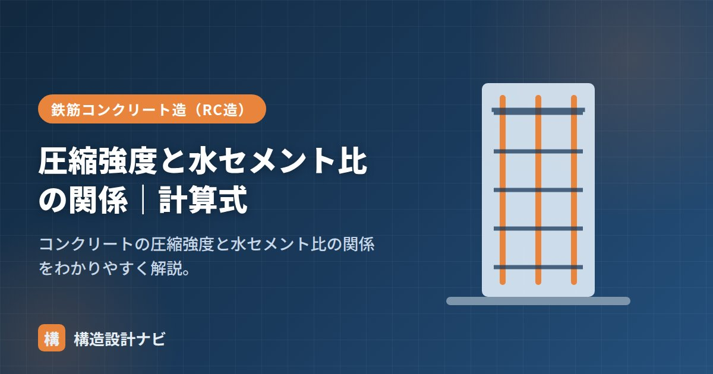

圧縮強度と水セメント比の関係｜計算式

コンクリートの圧縮強度は、ほぼ水セメント比（W/C：水とセメントの質量比）で決まります。水セメント比が小さいほど強度は高くなり、この関係は「水セメント比説」と呼ばれる配合設計の最重要原則です。この記事では、なぜ水セメント比で強度が決まるのか、セメント水比を使った強度の関係式、配合設計での使い方を、計算例を交えて整理します。
- 圧縮強度はほぼ水セメント比で決まり、W/Cが小さいほど高強度・高耐久。
- セメント水比（C/W＝W/Cの逆数）と圧縮強度はほぼ直線関係になる。
- 目標強度から必要なW/Cを逆算して配合を決める。
水セメント比が小さいほど高強度
水が多い（水セメント比W/Cが大きい）と、硬化後に水が抜けた跡が空隙として残り、強度が下がります。逆にW/Cが小さいほど緻密で高強度になります。これがコンクリート強度の最重要原則です。
理屈を補足すると、セメントの水和反応に必要な水はセメント質量の25%前後といわれます。実際の配合ではワーカビリティを確保するために50%前後の水を加えるため、反応に使われなかった余剰水が毛細管空隙となって残ります。W/Cが大きいほどこの空隙が多くなり、組織が粗くなって強度も耐久性も低下する、というメカニズムです。同じ理由で、W/Cが小さいコンクリートは中性化や塩害にも強くなります。
セメント水比と強度の関係式
実務では、水セメント比の逆数＝セメント水比（C/W）と圧縮強度が、ほぼ直線関係になることを使います。
この関係から、目標の強度を出すために必要な水セメント比を逆算して配合を決めます。定数A・Bはセメントや骨材など使用材料によって変わるため、実際には生コン工場の試し練りデータに基づいて定められます。W/Cそのものではなく逆数のC/Wをとると直線になる、という点が試験でも問われるポイントです。
計算例：必要な水セメント比を逆算する
仮に、ある材料の組合せで F＝20×(C/W)−10（単位：N/mm²）という関係が得られたとします。目標とする調合強度を30N/mm²とすると、
となり、水セメント比50%以下とすれば目標強度を満たせることが分かります。単位水量を185kg/m³とすれば、単位セメント量は185÷0.50＝370kg/m³と求められます。
設計基準強度への影響
高い設計基準強度を得るには、水セメント比を小さくします（高強度コンクリートでは30〜40%）。ただし水を減らすと固くなるため、減水剤で流動性を確保します。耐久性の面からも水セメント比に上限が定められます。
配合計画書を承認する際は、式のA・Bという定数が現場で使う生コン工場の試し練りデータに基づいているかをまず確認します。過去現場の実績値をそのまま流用した配合書も見かけるため、骨材の産地やセメントの種類が変わっていないかは自分の目で照合するようにしています。
水セメント比と強度の関係（図解）
配合設計での使い方（計算例）
目標の強度から必要な水セメント比を逆算し、単位水量から単位セメント量を求める流れを追ってみましょう。
条件：調合管理強度 30N/mm²、材料から定まる定数 A＝21、B＝−12、単位水量 175kg/m³
F ＝ A×(C/W) ＋ B より 30 ＝ 21×(C/W) − 12
C/W ＝ (30 ＋ 12) ÷ 21 ＝ 2.0
W/C ＝ 1 ÷ 2.0 ＝ 0.50 ＝ 50%
C ＝ W ÷ (W/C) ＝ 175 ÷ 0.50 ＝ 350 kg/m³
この流れが配合設計の骨格です。ここで求めたW/Cが、耐久性から定まる上限値（一般に65%以下、水密コンクリートでは50%以下など）を超えていないかも確認します。強度から決まるW/Cと、耐久性から決まるW/Cの、小さいほう（厳しいほう）を採用するのが原則です。
式の定数A・Bは、使用するセメント・骨材・混和剤の組み合わせによって変わります。生コン工場では、実際に使う材料で試験練りを行い、複数のW/Cで供試体を作って強度を測定し、そのデータから自社の定数を求めています。教科書の数値をそのまま使うのではなく、材料ごとの実測データに基づく点が実務のポイントです。
よくある質問
Q1. 水セメント比を小さくすれば、いくらでも強度は上がりますか？
限界があります。W/Cを下げすぎると、セメントの水和に必要な水が不足して未反応のセメントが残り、それ以上強度が伸びなくなります。理論的には25%程度が水和に必要な最低量とされますが、実際にはワーカビリティが確保できず施工が不可能になります。W/C30%を下回る超高強度コンクリートでは、高性能AE減水材やシリカフュームを使って流動性を確保します。
Q2. 同じ水セメント比なら強度は必ず同じですか？
おおむね同じになりますが、完全に同一ではありません。セメントの種類（早強・高炉など）、骨材の種類と品質、養生条件、材齢によって強度は変わります。特にセメントの種類による差は大きく、同じW/Cでも早強と高炉B種では材齢28日の強度に差が出ます。水セメント比説はあくまで「主要因は水セメント比」という原則で、他の条件を無視できるわけではありません。
Q3. 水セメント比の上限が定められているのはなぜですか？
耐久性を確保するためです。強度だけを見ればW/Cが多少大きくても設計基準強度を満たせる場合がありますが、W/Cが大きいと組織が粗くなり、中性化・塩害・凍害の進行が早まります。そのためJASS5では、計画供用期間に応じてW/Cの上限（一般に65%以下、長期の場合はより厳しい値）が定められています。強度と耐久性の両方から判断する必要があります。
まとめ
- 圧縮強度はほぼ水セメント比で決まり、W/Cが小さいほど高強度・高耐久。
- 余剰水が空隙として残ることが、W/Cが大きいと強度が下がる理由。
- セメント水比（C/W）と強度はほぼ直線関係 F＝A(C/W)＋B。目標強度からW/Cを逆算する。
- 高い設計基準強度にはW/Cを小さくし、減水剤で流動性を確保する。